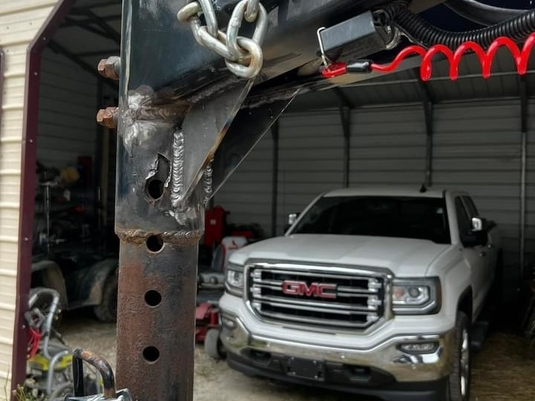
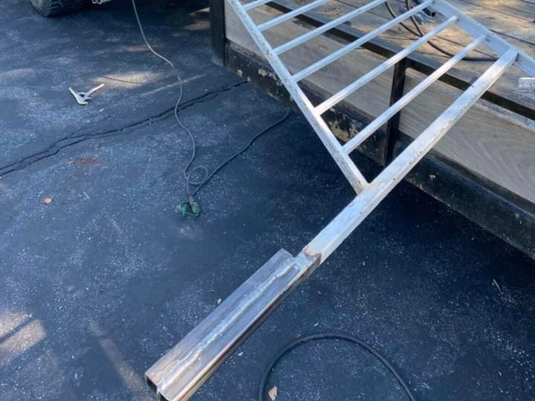
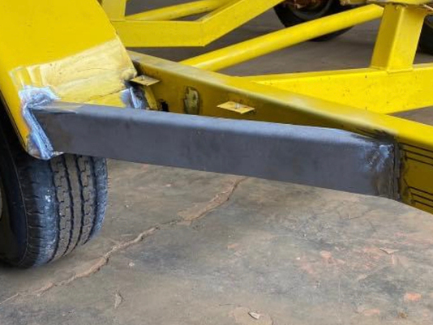

<section class="proofing off-white bg-dark">
  <div class="container">
    <div class="row">
      <div class="col-lg-8 carousel-column">
        <!--CAROUSEL COL-->
        <div class="carouselWrapper">
          <div
            id="carouselExampleSlidesOnly"
            class="carousel slide"
            data-bs-ride="carousel"
          >
            <div class="carousel-inner">
              <div class="carousel-item active" data-bs-interval="5000">
                
              </div>
              <div class="carousel-item" data-bs-interval="5000">
                
              </div>
              <div class="carousel-item" data-bs-interval="5000">
                
              </div>
              <div class="carousel-item" data-bs-interval="5000">
                
              </div>
            </div>
          </div>
        </div>
      </div>
      <div class="col-lg-4">
        <!--FACEBOOK POSTS COL-->
        <div class="flex-col-liner">
          <div
            class="fb-post"
            data-href="https://www.facebook.com/andy.weber.5682/posts/pfbid0juWQH5nMSNMjupkAmtGrCwG5mfnUCHtUbowg1jxNSxYRrWVHPaqta5ojuC9agxNBl"
            data-width="350"
            data-show-text="true"
          >
            <blockquote
              cite="https://www.facebook.com/andy.weber.5682/posts/10160557621352597"
              class="fb-xfbml-parse-ignore"
            >
              <p>
                Justin was great to work with! He is very knowledgeable and
                thorough. He continues to go above and beyond in every project I
                send his way because of this I wouldn’t call anyone else.
              </p>
              Posted by
              <a href="https://www.facebook.com/andy.weber.5682">Andy Weber</a>
              on&nbsp;<a
                href="https://www.facebook.com/andy.weber.5682/posts/10160557621352597"
                >Tuesday, March 28, 2023</a
              >
            </blockquote>
          </div>
        </div>
        <div
          class="fb-post"
          data-href="https://www.facebook.com/cody.wibbenmeyer/posts/pfbid035MkpZd3rzXStiFbZupvu8JhsnBA6KUxXUqQE2LAVCBCby2ZbnLCEtSnU16yneunMl"
          data-width="350"
          data-show-text="true"
        >
          <blockquote
            cite="https://www.facebook.com/cody.wibbenmeyer/posts/10225752953444869"
            class="fb-xfbml-parse-ignore"
          >
            <p>
              got the job done I wanted even when I threw curveballs into the
              mix with not being there and then having to come stop...
            </p>
            Posted by
            <a href="#" role="button">Cody Wibbenmeyer</a> on&nbsp;<a
              href="https://www.facebook.com/cody.wibbenmeyer/posts/10225752953444869"
              >Monday, January 24, 2022</a
            >
          </blockquote>
        </div>
      </div>
    </div>
  </div>
</section>
